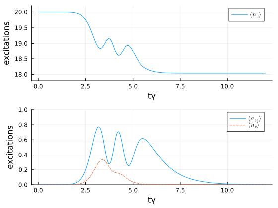

Interaction Picture Scattering with a Quantum Pulse
In this example, we study the scattering of a Fock state $| n = 20 \rangle$ on a two-level system, using the interaction picture introduced in Christiansen et al., Phys. Rev. A 107, 013706 (2023). We start by loading the packages and specifying the model.
using QuantumInputOutput
using QuantumOptics
using QuantumOpticsBase: dagger
using SecondQuantizedAlgebra
using Symbolics: Symbolics
using SymbolicUtils
using Plots
using LaTeXStrings# symbolic Hilbert space
hu = FockSpace(:u)
hs = NLevelSpace(:s, 2)
hv = FockSpace(:v)
h = hu ⊗ hs ⊗ hv
# symbolic operators
au_sym = Destroy(h, :a_u, 1)
av_sym = Destroy(h, :a_v, 3)
σ12_sym = Transition(h, :σ, 1, 2, 2)
# symbolic parameters
@variables gu::Number γ::Real gv::Number
# cascade the SLH elements
G_u = SLH(1, gu' * au_sym, 0)
G_s = SLH(1, sqrt(γ) * σ12_sym, 0)
G_v = SLH(1, gv' * av_sym, 0)
G_cas = ▷(G_u, G_s, G_v)H = hamiltonian(G_cas)\[ - 0.5 ~ \mathrm{conj}\left( \mathtt{gu} \right) ~ \sqrt{\gamma} ~ \mathit{i} a_{\mathrm{u}}{\sigma}^{{21}} - 0.5 ~ \mathrm{conj}\left( \mathtt{gu} \right) ~ \mathtt{gv} ~ \mathit{i} a_{\mathrm{u}}a_{\mathrm{v}}^{\dagger} + 0.5 ~ \mathtt{gu} ~ \sqrt{\gamma} ~ \mathit{i} a_{\mathrm{u}}^{\dagger}{\sigma}^{{12}} + 0.5 ~ \mathrm{conj}\left( \mathtt{gv} \right) ~ \mathtt{gu} ~ \mathit{i} a_{\mathrm{u}}^{\dagger}a_{\mathrm{v}} + 0.5 ~ \mathrm{conj}\left( \mathtt{gv} \right) ~ \sqrt{\gamma} ~ \mathit{i} {\sigma}^{{21}}a_{\mathrm{v}} - 0.5 ~ \mathtt{gv} ~ \sqrt{\gamma} ~ \mathit{i} {\sigma}^{{12}}a_{\mathrm{v}}^{\dagger}\]
J = jump_operator(G_cas)[1]\[\mathrm{conj}\left( \mathtt{gu} \right) a_{\mathrm{u}} + \sqrt{\gamma} {\sigma}^{{12}} + \mathrm{conj}\left( \mathtt{gv} \right) a_{\mathrm{v}}\]
Usually we deal with the above derived Hamiltonian and Lindblad. In this example, however, we transform the system into the interaction picture of the virtual cavity-cavity interaction Hamiltonian $H_{uv}$.
H_uv = hamiltonian(▷(G_u, G_v))\[ - 0.5 ~ \mathrm{conj}\left( \mathtt{gu} \right) ~ \mathtt{gv} ~ \mathit{i} a_{\mathrm{u}}a_{\mathrm{v}}^{\dagger} + 0.5 ~ \mathrm{conj}\left( \mathtt{gv} \right) ~ \mathtt{gu} ~ \mathit{i} a_{\mathrm{u}}^{\dagger}a_{\mathrm{v}}\]
To do so, we first subtract $H_{uv}$ from $H$ and then replace the virtual cavity operators $a_v$ and $a_u$ as described in the Theory section.
H_int_sym_ = simplify(H - H_uv)
# symbolic coefficient matrix $M(t)$
M(i, j) = Symbolics.variable(Symbol("M_{$(i)$(j)}"); T = Complex{Real})
a0_ls = [au_sym, av_sym]
la = length(a0_ls)
a_int_ls = [sum(M(i, j)*a0_ls[j] for j = 1:la) for i = 1:la]
# substitute interaction picture operators
int_dict = Dict([a0_ls; adjoint.(a0_ls)] .=> [a_int_ls; adjoint.(a_int_ls)])H_int_sym = simplify(substitute(H_int_sym_, int_dict))\[0.5 ~ \mathrm{conj}\left( \mathtt{gu} \right) ~ \mathrm{imag}\left( \mathtt{M_{{11}}} \right) ~ \sqrt{\gamma} - 0.5 ~ \mathrm{conj}\left( \mathtt{gv} \right) ~ \mathrm{imag}\left( \mathtt{M_{{21}}} \right) ~ \sqrt{\gamma} + \left( 0.5 ~ \mathrm{conj}\left( \mathtt{gv} \right) ~ \mathrm{real}\left( \mathtt{M_{{21}}} \right) ~ \sqrt{\gamma} - 0.5 ~ \mathrm{conj}\left( \mathtt{gu} \right) ~ \mathrm{real}\left( \mathtt{M_{{11}}} \right) ~ \sqrt{\gamma} \right) ~ \mathit{i} a_{\mathrm{u}}{\sigma}^{{21}} + 0.5 ~ \mathtt{gu} ~ \mathrm{imag}\left( \mathtt{M_{{11}}} \right) ~ \sqrt{\gamma} - 0.5 ~ \mathtt{gv} ~ \mathrm{imag}\left( \mathtt{M_{{21}}} \right) ~ \sqrt{\gamma} + \left( 0.5 ~ \mathtt{gu} ~ \mathrm{real}\left( \mathtt{M_{{11}}} \right) ~ \sqrt{\gamma} - 0.5 ~ \mathtt{gv} ~ \mathrm{real}\left( \mathtt{M_{{21}}} \right) ~ \sqrt{\gamma} \right) ~ \mathit{i} a_{\mathrm{u}}^{\dagger}{\sigma}^{{12}} + 0.5 ~ \mathrm{conj}\left( \mathtt{gu} \right) ~ \mathrm{imag}\left( \mathtt{M_{{12}}} \right) ~ \sqrt{\gamma} - 0.5 ~ \mathrm{conj}\left( \mathtt{gv} \right) ~ \mathrm{imag}\left( \mathtt{M_{{22}}} \right) ~ \sqrt{\gamma} + \left( - 0.5 ~ \mathrm{conj}\left( \mathtt{gu} \right) ~ \mathrm{real}\left( \mathtt{M_{{12}}} \right) ~ \sqrt{\gamma} + 0.5 ~ \mathrm{conj}\left( \mathtt{gv} \right) ~ \mathrm{real}\left( \mathtt{M_{{22}}} \right) ~ \sqrt{\gamma} \right) ~ \mathit{i} {\sigma}^{{21}}a_{\mathrm{v}} + 0.5 ~ \mathtt{gu} ~ \mathrm{imag}\left( \mathtt{M_{{12}}} \right) ~ \sqrt{\gamma} - 0.5 ~ \mathtt{gv} ~ \mathrm{imag}\left( \mathtt{M_{{22}}} \right) ~ \sqrt{\gamma} + \left( 0.5 ~ \mathtt{gu} ~ \mathrm{real}\left( \mathtt{M_{{12}}} \right) ~ \sqrt{\gamma} - 0.5 ~ \mathtt{gv} ~ \mathrm{real}\left( \mathtt{M_{{22}}} \right) ~ \sqrt{\gamma} \right) ~ \mathit{i} {\sigma}^{{12}}a_{\mathrm{v}}^{\dagger}\]
J_int_sym = simplify(substitute(J, int_dict))\[\mathrm{conj}\left( \mathtt{gu} \right) ~ \mathrm{real}\left( \mathtt{M_{{11}}} \right) + \mathrm{conj}\left( \mathtt{gv} \right) ~ \mathrm{real}\left( \mathtt{M_{{21}}} \right) + \left( \mathrm{conj}\left( \mathtt{gu} \right) ~ \mathrm{imag}\left( \mathtt{M_{{11}}} \right) + \mathrm{conj}\left( \mathtt{gv} \right) ~ \mathrm{imag}\left( \mathtt{M_{{21}}} \right) \right) ~ \mathit{i} a_{\mathrm{u}} + \sqrt{\gamma} {\sigma}^{{12}} + \mathrm{conj}\left( \mathtt{gu} \right) ~ \mathrm{real}\left( \mathtt{M_{{12}}} \right) + \mathrm{conj}\left( \mathtt{gv} \right) ~ \mathrm{real}\left( \mathtt{M_{{22}}} \right) + \left( \mathrm{conj}\left( \mathtt{gu} \right) ~ \mathrm{imag}\left( \mathtt{M_{{12}}} \right) + \mathrm{conj}\left( \mathtt{gv} \right) ~ \mathrm{imag}\left( \mathtt{M_{{22}}} \right) \right) ~ \mathit{i} a_{\mathrm{v}}\]
The above Hamiltonian and Lindblad operator are the ones in the interaction picture of the virtual cavity interaction. We define the numerical parameters of the system, calculate the solution for the coefficient matrix $M(t)$ and solve the time evolution of the system.
# numerical parameters
γ_ = 1.0
n_photons = 20
τ = 1 / γ_
t_p = 4 / γ_
u(t) = 1 / (sqrt(τ) * π^(1/4)) * exp(-0.5 * ((t - t_p) / τ)^2)
T_end = 12.0
T = [0:0.005:1;] * T_end
# virtual-cavity couplings for input/output modes
gu_t = coupling_input(u, T)
gv_t = coupling_output(u, T) # identical output mode v(t) = u(t)
# interaction-picture coefficient matrix M(t) for u ↔ v
A_uv = coupling_matrix((gu_t, gv_t))
M_t = solve_mode_evolution(A_uv, T)
# constant and time-dependent parameters
dict_p = Dict(γ => γ_)
M_ls = [M(i, j) for i = 1:la for j = 1:la]
M_t_ls = [t -> M_t(t)[i, j] for i = 1:la for j = 1:la]
p_t_sym = [gu, gv, M_ls...]
p_t_num = [gu_t, gv_t, M_t_ls...]
dict_p_t = Dict(p_t_sym .=> p_t_num)# numerical basis
bu = FockBasis(n_photons, n_photons-5)
ba = NLevelBasis(2)
bv = FockBasis(5)
b = bu ⊗ ba ⊗ bv
H_int_QO = to_numeric(H_int_sym, b; parameter = dict_p, time_parameter = dict_p_t)
J_QO = to_numeric(J_int_sym, b; parameter = dict_p, time_parameter = dict_p_t)
function input_output(t, ρ)
Ht = H_int_QO(t)
J = [J_QO(t)]
return Ht, J, dagger.(J)
end# time evolution
ψ0 = fockstate(bu, n_photons) ⊗ nlevelstate(ba, 1) ⊗ fockstate(bv, 0)
t, ρt = timeevolution.master_dynamic(T, ψ0, input_output)
# numerical operators
au = destroy(bu) ⊗ one(ba) ⊗ one(bv)
av = one(bu) ⊗ one(ba) ⊗ destroy(bv)
σee = one(bu) ⊗ transition(ba, 2, 2) ⊗ one(bv)
n_u = real.(expect(au' * au, ρt))
n_v = real.(expect(av' * av, ρt))
P_e = real.(expect(σee, ρt))We can see that the mean photon number of the initial temporal mode $u$ is reduced by less than two photons. This allows us to significantly reduce the numerical Hilbert space dimension. If the interaction picture is not used, the input cavity $u$ completely empties and the output cavity almost completely fills again.
p1 = plot(T, n_u; label = L"\langle n_u \rangle")
plot!(
p1;
xlabel = "tγ",
ylabel = "excitations",
ylims = (17.8, 20.2),
grid = true,
legend = :best,
)
p2 = plot(T, P_e; label = L"\langle \sigma_{ee} \rangle")
plot!(p2, T, n_v; label = L"\langle n_v \rangle", ls = :dash)
plot!(
p2;
xlabel = "tγ",
ylabel = "excitations",
ylims = (0, 1),
grid = true,
legend = :best,
)
plot(p1, p2; layout = (2, 1), size = (560, 420))
Package versions
These results were obtained using the following versions:
using InteractiveUtils
versioninfo()
using Pkg
Pkg.status(
[
"QuantumInputOutput",
"QuantumOptics",
"SecondQuantizedAlgebra",
"SymbolicUtils",
"Plots",
"LaTeXStrings",
],
mode = PKGMODE_MANIFEST,
)Julia Version 1.12.7
Commit 6d172b025e4 (2026-08-15 08:05 UTC)
Build Info:
Official https://julialang.org release
Platform Info:
OS: Linux (x86_64-linux-gnu)
CPU: 4 × AMD EPYC 9V74 80-Core Processor
WORD_SIZE: 64
LLVM: libLLVM-18.1.7 (ORCJIT, znver4)
GC: Built with stock GC
Threads: 4 default, 1 interactive, 4 GC (on 4 virtual cores)
Environment:
JULIA_PKG_SERVER_REGISTRY_PREFERENCE = eager
JULIA_DEBUG = Documenter
JULIA_NUM_THREADS = auto
Status `~/work/QuantumInputOutput.jl/QuantumInputOutput.jl/docs/Manifest.toml`
[b964fa9f] LaTeXStrings v1.4.1
[91a5bcdd] Plots v1.41.7
[18f9eda6] QuantumInputOutput v0.5.1 `~/work/QuantumInputOutput.jl/QuantumInputOutput.jl`
[6e0679c1] QuantumOptics v1.2.8
[f7aa4685] SecondQuantizedAlgebra v0.10.0
[d1185830] SymbolicUtils v4.45.0This page was generated using Literate.jl.